Vanilla spirit
Progressão com significado, economia viva e uma jornada que não perde o valor em dois dias. Cada nível é uma conquista.
GF Nexus é uma nova casa para quem sente falta da aventura colorida, das parties espontâneas, dos sprites companheiros e daquele clima de MMORPG que faz você entrar só para viver o mundo por mais algumas horas.
Reconstruímos a experiência clássica de Grand Fantasia com respeito à progressão original — mas com a estabilidade, a comunidade e o carinho que um servidor feito por quem ama o jogo pode oferecer.
Progressão com significado, economia viva e uma jornada que não perde o valor em dois dias. Cada nível é uma conquista.
A moeda premium inspirada nos antigos APs, integrada à loja e ao marketplace interno — sem pay-to-win, só conveniência e cosméticos.
Pesquisas, guildas, sugestões e recrutamento. Ajude a construir o servidor com os jogadores, desde o primeiro dia.
Conheça melhor a proposta do servidor, acompanhe as novidades e veja como participar da construção da comunidade desde o início.
Entenda nossa visão, filosofia classic-like, progresso planejado e compromisso com a comunidade.
Ler sobre o projeto →Acompanhe comunicados, roadmap, etapas de desenvolvimento, recrutamento e preparação da beta.
Ver notícias →Veja áreas abertas, responsabilidades, perfil esperado e formulário oficial para candidatura.
Conhecer recrutamento →Das classes-base às evoluções de elite — encontre o estilo que combina com você antes de pisar no mundo.
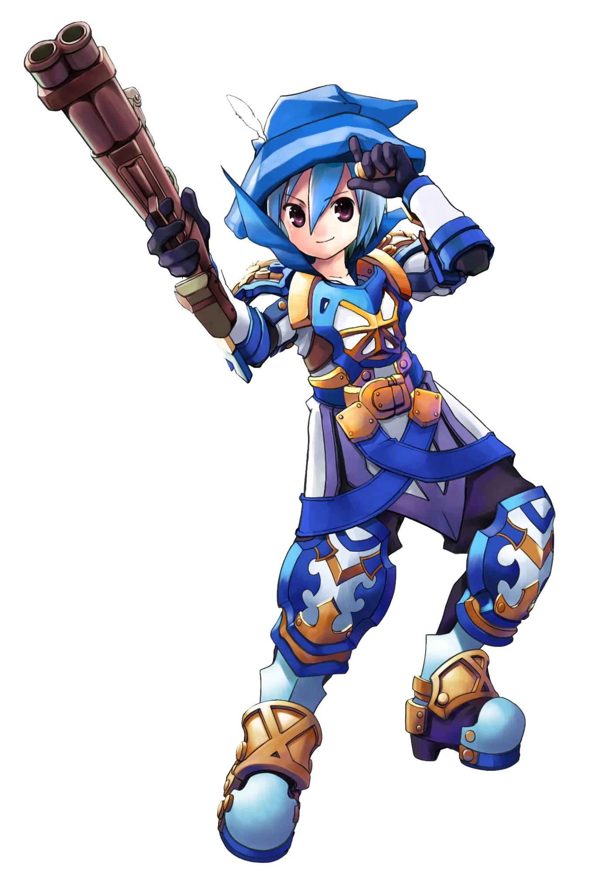
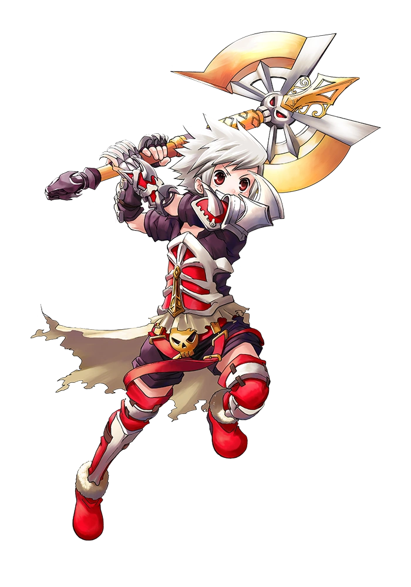
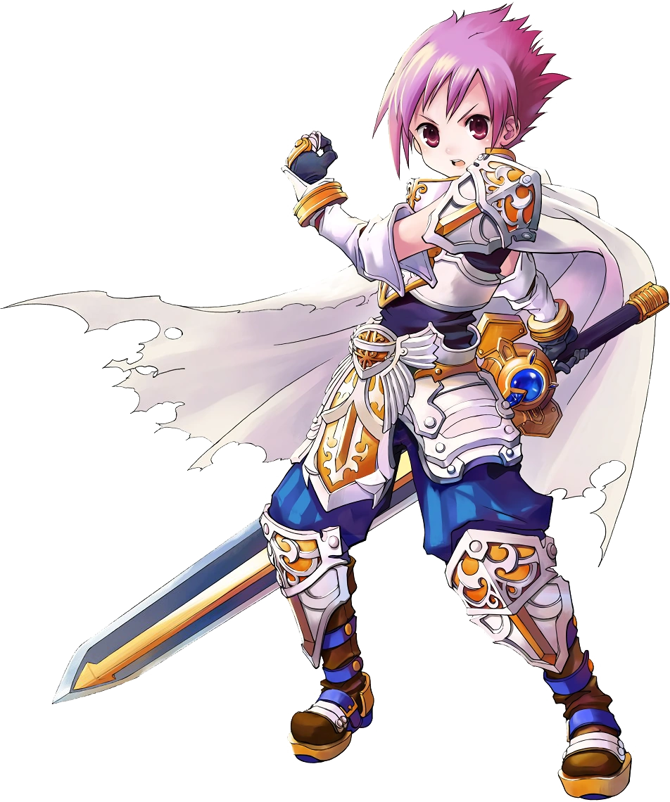
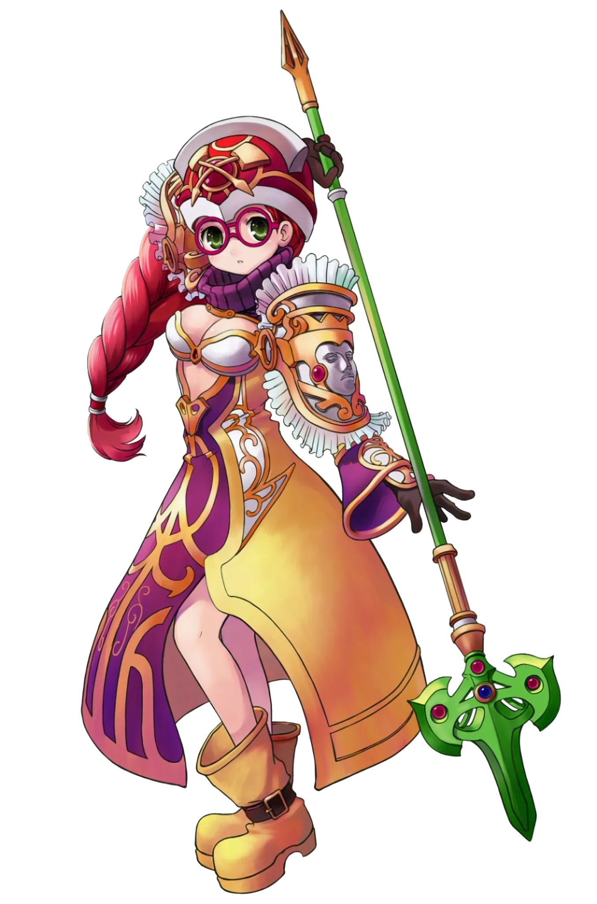
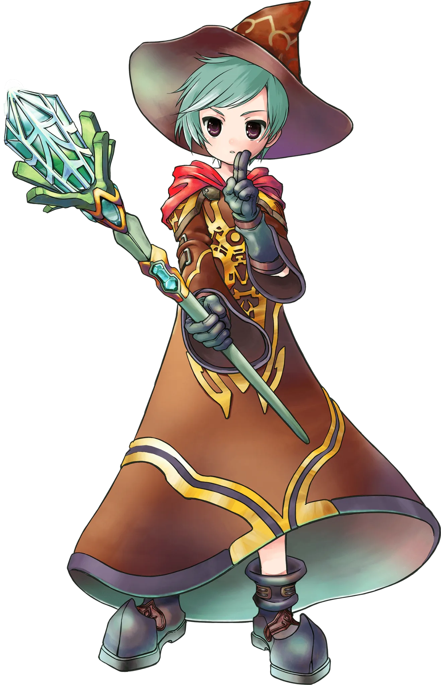
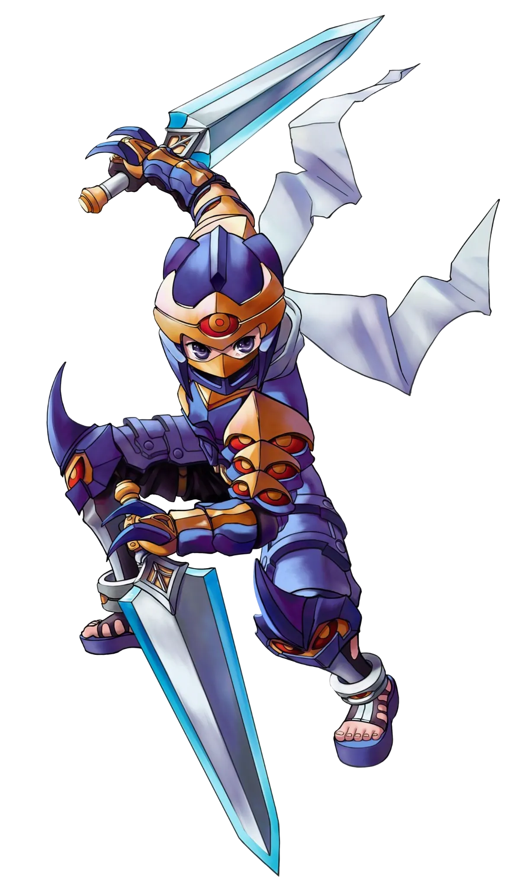
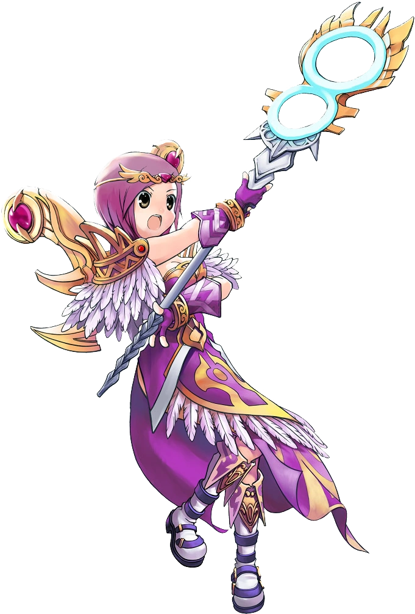
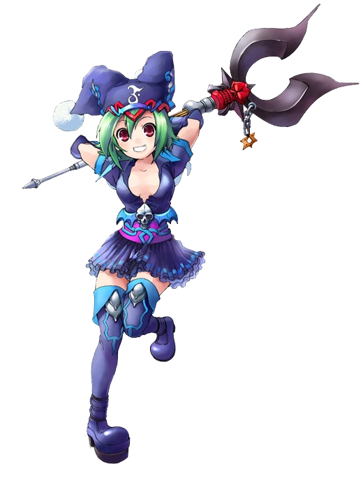
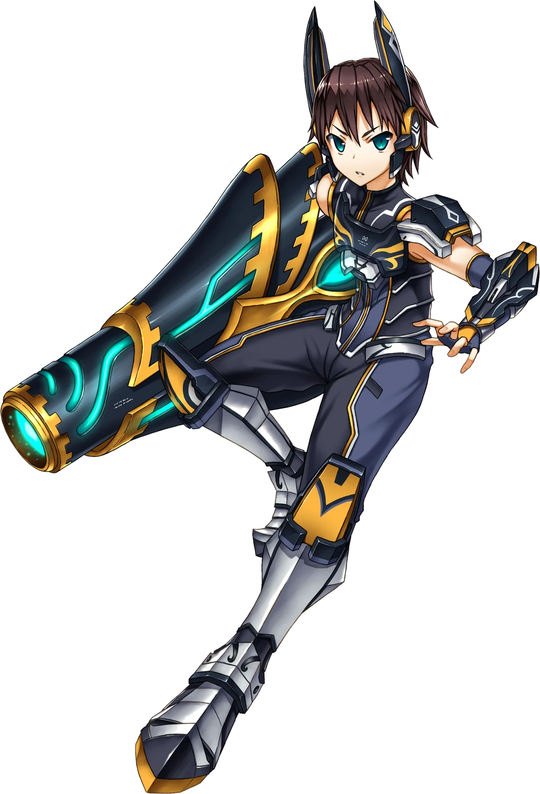
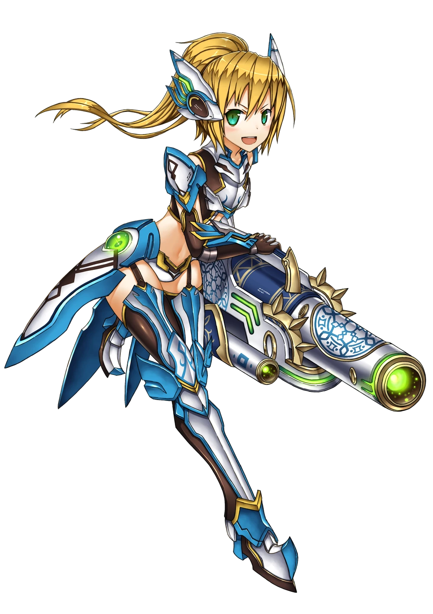
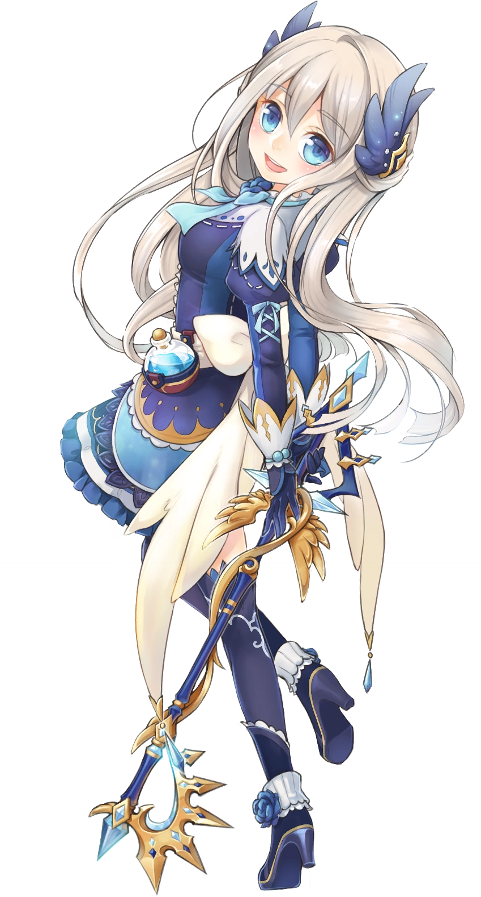
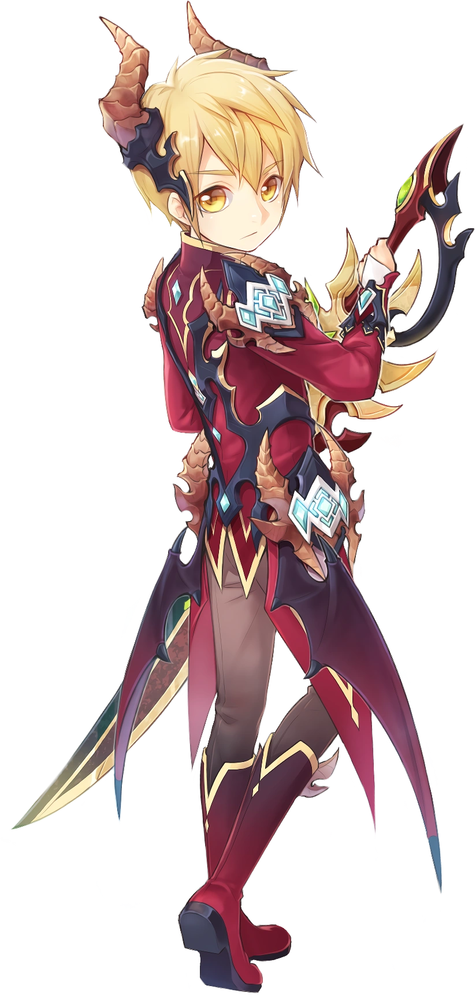
E muitas outras — incluindo as evoluções especiais que todo veterano de GF reconhece.
Transparência total — acompanhe cada etapa rumo ao lançamento.
Servidor mapeado, dados catalogados, pipeline de tradução pt-BR e infraestrutura definida.
Construção da comunidade ouvindo sugestões e ideias. Coleta de feedback, balanceamento e estabilidade.
Portas abertas para a comunidade. Eventos, guildas e os primeiros conteúdos de endgame.
Servidor estável, conteúdo completo até o cap, loja NP cosmética, marketplace integrado.
O GF Nexus está crescendo e queremos pessoas responsáveis e apaixonadas por Grand Fantasia para ajudar a construir uma comunidade forte, acolhedora e bem organizada.
Estamos buscando apoio para áreas como suporte aos jogadores, moderação, eventos, testes, tradução, criação de conteúdo, divulgação e apoio técnico.
Preencha o formulário de recrutamento com atenção. Todas as respostas serão analisadas pela administração, e candidatos selecionados poderão ser chamados para uma conversa ou etapa adicional.
Ver detalhes do recrutamento O envio do formulário não garante aprovação. Buscamos pessoas com responsabilidade e compromisso com a comunidade.Entre no Discord para acompanhar o desenvolvimento, participar de pesquisas, encontrar sua guilda e ser avisado em primeira mão quando a beta abrir.
Estamos finalizando os últimos preparativos da beta. Por enquanto não há formulário de inscrição — mas você pode entrar na comunidade agora e ser o primeiro a saber quando as vagas abrirem.
✓ Quem já estiver na comunidade quando a beta abrir garante convite prioritário e o título de fundador in-game.
Não. Jogar é totalmente gratuito. Teremos uma loja com Nexus Points (NP) focada em cosméticos e conveniência — nada de pay-to-win.
Filosofia vanilla: rates próximos do 1× original. Queremos que a progressão tenha valor e a economia faça sentido a longo prazo.
Estamos traduzindo o jogo para português brasileiro como prioridade, com inglês, espanhol e francês planejados em seguida.
Você vai baixar o client pelo nosso site ou discord e criar uma conta. As instruções completas serão enviadas para a lista de espera e divulgadas no Discord.